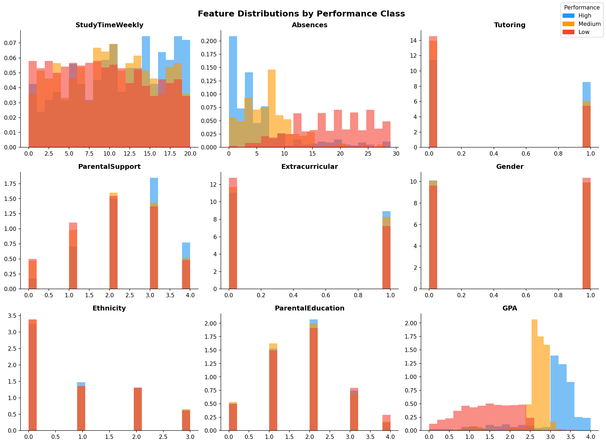
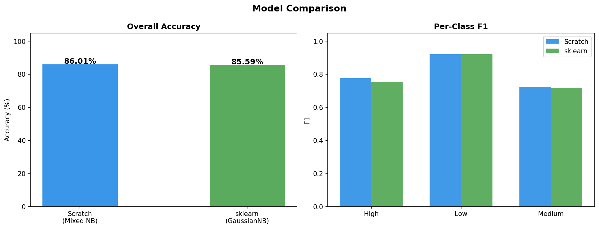
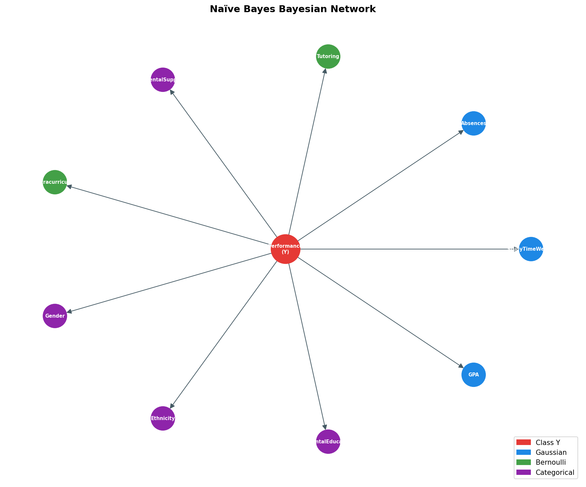

Student Performance Prediction
using Mixed Naive Bayes
A from-scratch Bayesian classifier that predicts student academic performance tiers using mixed likelihood functions — Gaussian, Bernoulli, and Laplace-smoothed categorical — benchmarked against scikit-learn's GaussianNB baseline.
Project Overview
A Mixed Naive Bayes classifier built from scratch with per-feature-type likelihood functions: Gaussian for continuous, Bernoulli for binary, and Laplace-smoothed categorical for multi-class nominal features. Log-probabilities prevent numerical underflow.
scikit-learn's GaussianNB trained on the same 80/20 split with seed 42, using a single Gaussian likelihood for all features regardless of type.
Kaggle — rabieelkharoua/students-performance-dataset
2,392 records across academic, behavioral, and demographic features.
High — GradeClass 0 or 1
Medium — GradeClass 2
Low — GradeClass 3 or 4
Dataset & Feature Engineering
| Feature | Likelihood Type | Description |
|---|---|---|
| GPA | Gaussian | Grade point average |
| StudyTimeWeekly | Gaussian | Weekly study hours |
| Absences | Gaussian | Number of absences |
| Tutoring | Bernoulli | Receives tutoring (binary 0/1) |
| Extracurricular | Bernoulli | Participates in activities (binary 0/1) |
| ParentalSupport | Categorical | Parent support level (multi-class) |
| Gender | Categorical | Gender category code |
| Ethnicity | Categorical | Ethnicity category code |
| ParentalEducation | Categorical | Parent education level |
Methodology
Conditional independence: All features treated as independent given the class label — the core Naive Bayes assumption.
Mixed likelihoods: Each feature uses the statistically appropriate distribution. Continuous → Gaussian PDF. Binary → Bernoulli PMF. Categorical → Laplace-smoothed categorical estimates.
Laplace smoothing: Applied to categorical likelihoods to assign non-zero probability to unseen category values at inference time.
Log-probability: Products of small probabilities replaced with sums of logs — eliminates floating-point underflow on high-dimensional data.
Train-test split: 80/20 stratified split with random_state=42 for full reproducibility across both models.
Results
Per-class metrics — custom model
Low class is the most separable (F1 = 0.923). Medium has the lowest precision (0.615) — it sits between High and Low in feature space, causing boundary overlap.
Key Observations
Mixed likelihoods (86.01%) outperform all-Gaussian GaussianNB (85.59%). Correct distributional assumptions matter even with the independence shortcut.
GPA, Absences, and StudyTimeWeekly carry the strongest discriminative signal. The Gaussian features alone drive most of the classification power.
Precision for Medium is only 0.615. It overlaps significantly with both High and Low, making clean separation difficult for any marginal classifier.
GPA and Absences are correlated, technically violating the Naive Bayes assumption. Despite this, accuracy remains strong — a known property of NB's robustness.
Visualizations






Images load from plots/ in the repository root. Placeholders display for any missing file.